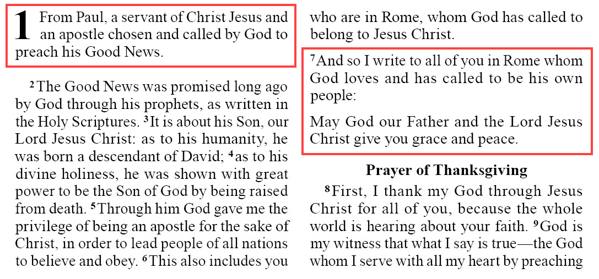

po
Summary
- Description
-
Opening of an epistle/letter.
- Syntax
-
-
USFM:
\po text... -
USX:
<para style="po">text...</para>
-
- Added
-
3.0
Properties
- StyleType
-
Paragraph
- OccursUnder
-
[ChapterContent] - TextType
-
VerseText
- TextProperties
-
paragraph, publishable, vernacular
Examples
Example 1. Romans 1.1,7 (GNT)
\c 1
\po
\v 1 From Paul, a servant of Christ Jesus and an apostle chosen and called by
God to preach his Good News.
\p
\v 2 The Good News was promised long ago by God through his prophets, as
written in the Holy Scriptures.
...
\v 6 This also includes you who are in Rome, whom God has called to belong to
Jesus Christ.
\po
\v 7 And so I write to all of you in Rome whom God loves and has called to be
his own people:
\po May God our Father and the Lord Jesus Christ give you grace and peace.
